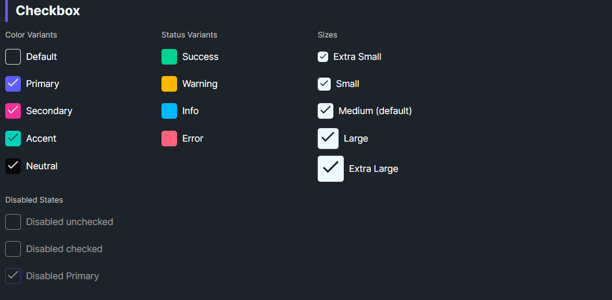

DaisyCheckBox is a styled checkbox with 9 color variants and 5 size presets. It uses a filled box with a checkmark when checked and inherits WinUI's IsChecked/IsThreeState behavior. Use variants for semantic meaning and sizes to match surrounding controls.
| Variant | Description |
|---|---|
| Default | Neutral base styling. |
| Primary / Secondary / Accent | Brand-aligned colors for emphasis. |
| Neutral | Muted neutral fill. |
| Info / Success / Warning / Error | Semantic colors for statuses. |
| Size | Box (approx) | Check | Use Case |
|---|---|---|---|
| ExtraSmall | 8px | 5px | Dense tables/toolbars. |
| Small | 10px | 6px | Compact forms. |
| Medium (default) | 12px | 8px | General usage. |
| Large | 14px | 10px | Spacious layouts, cards. |
| ExtraLarge | 16px | 12px | Hero sections or touch targets. |
<!-- Basic variants -->
<controls:DaisyCheckBox Content="Default" />
<controls:DaisyCheckBox Content="Primary" Variant="Primary" IsChecked="True" />
<controls:DaisyCheckBox Content="Warning" Variant="Warning" IsChecked="True" />
<controls:DaisyCheckBox Content="Error" Variant="Error" IsChecked="True" />
<!-- Sizes -->
<StackPanel Spacing="6">
<controls:DaisyCheckBox Content="Extra Small" Size="ExtraSmall" IsChecked="True" />
<controls:DaisyCheckBox Content="Small" Size="Small" IsChecked="True" />
<controls:DaisyCheckBox Content="Medium" Size="Medium" IsChecked="True" />
<controls:DaisyCheckBox Content="Large" Size="Large" IsChecked="True" />
<controls:DaisyCheckBox Content="Extra Large" Size="ExtraLarge" IsChecked="True" />
</StackPanel>
<!-- Disabled states -->
<controls:DaisyCheckBox Content="Disabled unchecked" IsEnabled="False" />
<controls:DaisyCheckBox Content="Disabled checked" IsEnabled="False" IsChecked="True" />
<controls:DaisyCheckBox Content="Disabled Primary" Variant="Primary" IsEnabled="False" IsChecked="True" />Padding.